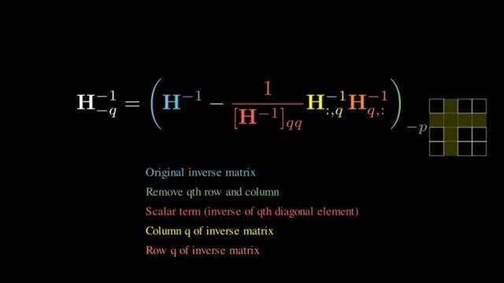

A worked update, then one elimination step
The formulas are in the previous note. This note runs them on five calibration rows, then shows the elimination step that avoids a second inversion.
Three weights, checked
This example is constructed. Five calibration rows, one output, grid points at half-integers from $-1$ to $1$. $X$ is stored as PyTorch would store it, $(\text{samples},\text{in})$.
| Row | $x_0$ | $x_1$ | $x_2$ |
|---|---|---|---|
| 1 | 1.0 | 0.8 | 0.1 |
| 2 | 1.1 | 0.7 | $-0.2$ |
| 3 | 0.9 | 0.9 | 0.0 |
| 4 | 1.2 | 0.6 | 0.3 |
| 5 | 0.4 | 0.2 | 1.0 |
The full-precision weights are $w=(1.20,-0.85,0.40)$. After transposing, $H=2X^{\mathsf T}X$ is
The same matrix is $2X_{\text{paper}}X_{\text{paper}}^{\mathsf T}$ if $X_{\text{paper}}=X^{\mathsf T}$. That is the layout check.
| Column | Weight | Grid point | Score |
|---|---|---|---|
| 0 | 1.20 | 1.0 | 0.020806 |
| 1 | $-0.85$ | $-1.0$ | 0.006181 |
| 2 | 0.40 | 0.5 | 0.019105 |
Read that table as one pass of the video's loop. The calibration rows were fed through the layer. The three scores are the stored quantization errors, the extra MSE of snapping each remaining weight and applying the optimal adjustment. The smallest stored error is 0.006181, so column 1 is the row you quantize, from $-0.85$ to $-1$. The other two weights are still floating point, and they are the ones you adjust.
The update is $\delta=-(w_1-(-1))/[H^{-1}]_{11}\cdot(H^{-1})_{:,1}$, which evaluates to $(0.105629,-0.150000,-0.017195)$. The new weights are $(1.305629,-1,0.382805)$. Column 1 is on the grid. Columns 0 and 2 moved.
Snapping column 1 and leaving the others alone gives output squared error 0.05265. The compensated weights give 0.00309, which is half the winning score, as the factor-of-2 remark predicted. Those free weights also match the least-squares solution that holds column 1 at $-1$ and refits the other two. tools/check_gptq_update.py asserts both comparisons. This is not a claim about a 7B model. It is a check that the formula you implement is the constrained quadratic, not a proportional nudge by $H_{qq}$.
One Gaussian-elimination step, instead of a new inverse

You were right about the operation. After weight $q$ is quantized it is no longer free, so the next score and the next repair need the inverse of the remaining Hessian, not the inverse you already have. Rebuilding $H$ from the remaining columns and inverting it is correct. It is also what makes OBQ cubic: an $n\times n$ inversion is $O(n^3)$, and you would do it once per weight.
Deleting row $q$ and column $q$ of $H^{-1}$ is not the same thing. The inverse of a submatrix is not the matching submatrix of the inverse. The coupling through weight $q$ is still sitting in the other entries. Gaussian elimination is how you remove that coupling without factoring $H$ again.
You already have $G=H^{-1}$. One elimination step uses $[G]_{qq}$ as the pivot and clears column $q$ in every other row. For each row $i\neq q$,
Entrywise, that is $G_{ij}\leftarrow G_{ij}-G_{iq}G_{qj}/G_{qq}$. Written for the whole matrix, it is the outer product on the video slide:
Apply the same subtraction to the pivot row and it becomes the zero row, because you subtract $\text{row}_q$ from itself. Column $q$ is zero for the same reason. The subscript $-q$ means delete that zero row and zero column. What remains is $H^{-1}_{-q}$.
Why is the leftover block the inverse you wanted? Partition $H$ so coordinate $q$ is last. $A$ is the remaining Hessian, $c=H_{qq}$, and $b$ is the column of couplings:
The top-left block of $H^{-1}$ is not $A^{-1}$. It is $A^{-1}$ plus a rank-one term built from $A^{-1}b$. Column $q$ of $H^{-1}$, apart from the pivot, is exactly the vector that carries that rank-one term. Subtracting $G_{:,q}G_{q,:}/G_{qq}$ cancels it. The block that is left is $A^{-1}$, the inverse of the Hessian with weight $q$ removed. That is the only fact the elimination step is buying. You do not solve a new linear system. You downdate the inverse you already paid for.
The same three-weight inverse makes the arithmetic visible. After the layout transpose,
Eliminate coordinate 1. The pivot is $3.64025$. The multiplier for row 0 is $-2.56343/3.64025=-0.70419$, and for row 2 it is $0.41730/3.64025=0.11463$. Subtract those multiples of row 1. Row 1 itself is then deleted. The $2\times 2$ block that remains is
The Hessian with column 1 of $X$ removed is $\begin{bmatrix}9.24&1.28\\ 1.28&2.28\end{bmatrix}$, and its inverse is that same $2\times 2$ block. tools/check_gptq_update.py asserts the match. One elimination step replaced an inversion.
The cost of the step is the outer product, $O(n^2)$ writes, not $O(n^3)$. A 1000-wide layer is a million updates instead of a billion. A 4096-wide projection is the same idea with a much larger matrix. OBQ still pays that outer product once per weight and once per row, which is the cubic total from the first note. The next note is why GPTQ stops repeating the elimination: a fixed order needs it only once per column, and enough repeated steps make the running inverse indefinite, which is why the implementation switches to Cholesky.
The paper prints $2XX^{\mathsf T}$. Should I patch the PDF before using GPTQ?
No. Orient $X$ as $(\text{in},\text{tokens})$, which is what the authors' linear path does by transposing, and the printed formula applies. Patching the PDF and also transposing will transpose twice.
Why is the compensated error half the score?
Because $H=2X^{\mathsf T}X$, and the output squared error is $\tfrac12\delta^{\mathsf T}H\delta$ at the full-precision point. Rank weights by the score, or by the squared error. Do not mix the two numbers in a log.
Can I use the diagonal of $H$ instead of $H^{-1}$?
Only as a different method. The OBQ update is a column of the inverse. The diagonal of $H$ ignores the correlation the whole construction is there to use. On this example the two updates are not the same vector.
Sources
- Frantar et al., GPTQ, equation (3). The inverse removal.
- Savolainen, from 18:37. One Gaussian-elimination step on the inverse.
tools/check_gptq_update.py, the three-weight check of the update, the prune-to-zero case, and the reduced inverse.